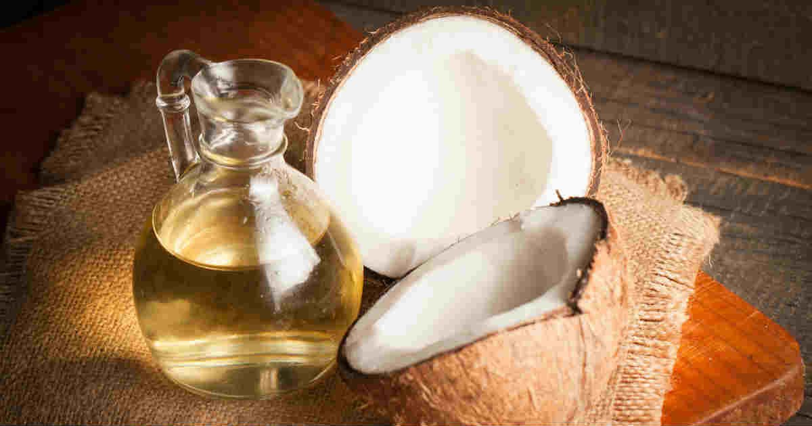
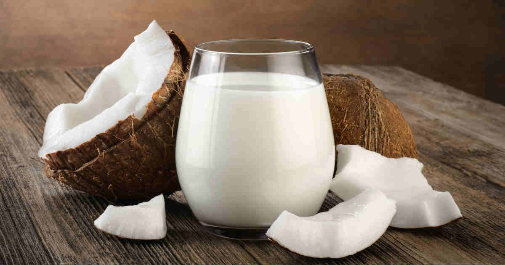
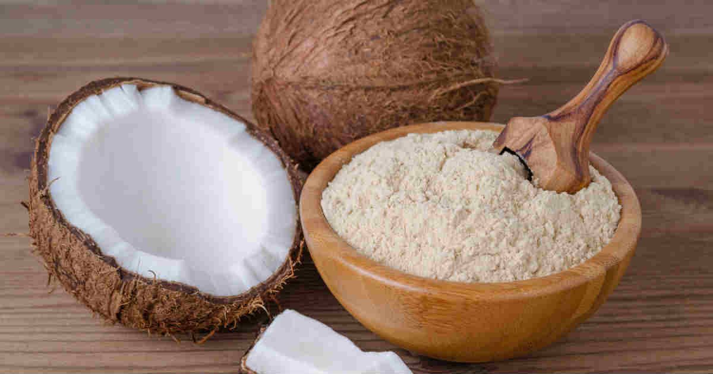
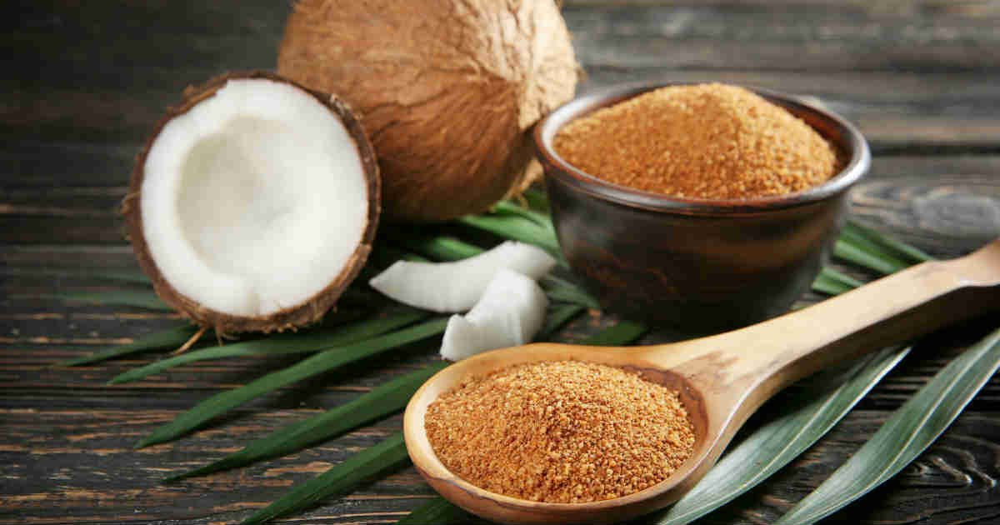

Coco: benefícios, calorias e formas de consumo
Escrito por: Redação • Atualizado em: 30/06/2019
O coco é um alimento funcional por excelência: todos os seus derivados têm importantes ações que contribuem para a saúde do nosso corpo. O coco é rico em compostos fenólicos - antioxidantes que agem contra os radicais livres. O coco ajuda a relaxar os nervos e os músculos, baixa o nível de pressão arterial, controla o açúcar no sangue, produz um perfil lipídico mais saudável (HDL alto e LDL baixo), contribui para a imunidade, reduz a inflamação de articulações e auxilia no emagrecimento.
Formas de consumir o coco
Tudo se aproveita no fruto: água de coco, polpa verde, polpa madura, leite de coco, óleo de coco, farinha de coco e, mais recentemente, o açúcar de coco. Ele é versátil, pode ser usado em uma infinidade de pratos doces e salgados, e no preparo de um leite vegetal para os que têm intolerância à lactose ou para os que querem fazer um detox evitando laticínios. As principais formas de consumir o fruto são:
Água de coco
A água de coco é excelente fonte de minerais, principalmente potássio, cálcio e magnésio, e também selênio, iodo, enxofre, zinco, manganês, ácidos orgânicos, enzimas, fitonutrientes, aminoácidos e vitamina C. Ela tem ação hidratante, mineralizante, diurética, antioxidante e evita câimbras. A água de coco melhora a função intestinal. Possui poucas calorias, uma média de 40 calorias por copo de 200 ml.
Coco maduro

Muitos evitam o coco por considerá-lo calórico e gorduroso. A polpa do coco maduro é uma excelente opção para quem luta contra o peso - ela contém muitas fibras e sua gordura composta por ácidos graxos curtos não é estocada pelas células, ajuda a saciar e dá energia. Além disso, mantém o metabolismo ajustado e regula a função tireoidiana.
A polpa do coco maduro vem recheada com vitaminas, A, C, E e do complexo B, sais minerais, magnésio, potássio manganês, selênio, zinco, ferro, sódio, cálcio e fósforo, polifenóis e fitoesteróis que trabalham juntos para reduzir os níveis de colesterol LDL, o ruim. A quantidade indicada é 1/4 da polpa do coco seco, 50 gramas, na hora do lanche.
Óleo de coco
Um fato interessante no aspecto nutricional do óleo de coco é que apesar de conter um nível elevado de gorduras saturadas (90% da usa composição), elas são formadas basicamente por ácidos graxos de cadeia curta e média que não são armazenados pelo corpo e fornecem energia imediata. A gordura do coco é rica em ácido láurico (50% do total de lipídios) com propriedades antibacterianas, antifúngicas e antivirais.
Este ácido graxo ativa o sistema imunológico e aumenta a capacidade de combater doenças. Uma das ações do ácido láurico é a manutenção da elasticidade dos vasos sanguíneos, além de varrer os depósitos de colesterol e outros detritos metabólicos, deixando os vasos limpos, o que contribui para reduzir o risco de arteriosclerose e doenças cardíacas. Pode ser usado no preparo de alimentos, consumido ao natural ou acrescentado em vitaminas e shakes.
Leite de coco
O leite de coco é rico em gordura saturada saudável que o corpo facilmente quebra e usa como fonte de energia. Pesquisas mostram que as populações que consomem leite de coco têm baixas taxas de doença cardíaca. O leite, extraído da polpa do coco, contém ácido láurico, potássio, magnésio, cálcio, fósforo, ferro, selênio, sódio, proteína e vitaminas C, E, B1, B3, B5 e B6. É um leite cremoso, sem lactose, saboroso, melhora a digestão e pode aliviar os sintomas de hiperacidez, úlceras e refluxo.
Farinha de coco
A farinha de coco é muito rica em fibras, ajuda na saciedade, melhora a função intestinal, regula o açúcar no sangue e os níveis de colesterol. Ela tem baixo teor de gordura, pois é preparada a partir do bagaço após a retirada do leite de coco, onde está a gordura. Ela pode ser usada ao natural (no suco, vitamina ou iogurte) e no preparo de pães, bolos e biscoitos, tornando estas gostosuras permitidas na dieta e aliadas da perda de peso. É livre de glúten e hipoalergência. Seu teor de fibras não digeríveis é maior do que de qualquer outra farinha ou farelo: 10 gramas de farinha de coco fornecem 4 gramas de fibra, e por isso promove saciedade com a sensação de estar "cheio" por mais tempo. Os estudos mostram que o uso regular da farinha de coco (2 colheres de sopa por dia) ajuda a reduzir em até 10% a ingestão de calorias, o que permite um emagrecimento gradual e saudável.
Açúcar de coco
O açúcar de coco é obtido através da seiva encontrada dentro do coqueiro. Para obtê-lo, é preciso fazer um corte na flor do coqueiro. A seiva líquida recolhida passa por um aquecimento e é desidratada através do calor, o que resulta em cristais usados para adoçar alimentos. Ele é considerado um alimento minimamente processado, já que não leva conservantes nem passa por processos de refinamento.
Hoje, ele tem sido usado cada vez mais como um substituto do açúcar refinado. Ambos têm a mesma capacidade de adoçar alimentos e calorias semelhantes, no entanto, o açúcar de coco tem menor índice glicêmico, o que significa que ele causa menores picos de glicose e de insulina no organismo.
Coco ajuda a emagrecer?
A pesquisa atual comprova que deixar de comer gordura ou não ingerir quantidade suficiente faz com que se ganhe peso. Claro que é importante escolher as gorduras certas (as que trazem benefícios) e evitar as frituras e gorduras trans. Gorduras ricas em triglicerídeos de cadeia curta e média, como a presente no coco, ajudam a controlar o apetite e ainda dão uma acelerada no metabolismo.
Perder peso quando se faz uma dieta pode ser bem mais fácil com a adição da gordura do coco. Um estudo publicado na revista Obesity Research mostrou que o ácido láurico presente no coco aumenta o gasto energético e reduz a adiposidade em homens obesos. Outro estudo publicado no Journal of Nutrition constatou os efeitos fisiológicos dos ácidos graxos de cadeia média como agentes potenciais na prevenção da obesidade.
Polpa do coco verde X Polpa do coco seco
Existem algumas diferenças no teor de nutrientes, de acordo com o amadurecimento do fruto. Polpa verde: 50 gramas contêm 35 calorias, 0.7 gramas de proteína, 1.8 gramas de gordura, 5 gramas de carboidrato, 0.4 gramas de fibras, 130 miligramas de potássio. Polpa madura: 50 gramas contêm 195 calorias, 1.8 gramas de proteína, 20 gramas de gordura, 2 gramas de carboidrato, 4 gramas de fibras, 180 miligramas de potássio.
Coco no dia a dia
Por sua versatilidade o coco serve para uma variedade de propósitos na cozinha, do café da manhã ao jantar, em lanches caprichados ou em dias de festa, em pratos salgados ou doces. O coco definitivamente é muito fácil de usar e deve ter um lugar em seu cardápio diário. Cozinhe com óleo de coco para deixar seus alimentos mais saudáveis. O leite de coco pode substituir o leite e o creme de leite nas receitas, deixando o prato mais leve.
Arroz doce com leite de coco é uma variação muito interessante. Pães, biscoitos e bolos preparados com o leite, o óleo e a farinha de coco ficam com um sabor delicioso e muito macios. Experimente também em suflês e mousses. Troque sucos calóricos e açucarados por água de coco, e não dispense a polpa verde. Na hora do lanche coma um bom pedaço de coco maduro. Sua saúde agradece!